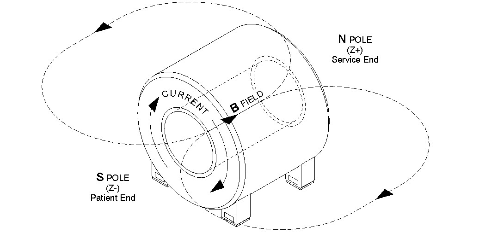

| NOTE: | The Center Frequency changes by about 359 kHz per amp of change in Main Coil current. The main field either increases or decreases by the amount recorded in Removing Transverse and Axial Shim Currents, Step 8. For example, a Delta Frequency of +64 kHz indicates the Main Field is too high and has to be decreased by this amount. |
Illustration 4: Magnet Polarity Ramped Normal
